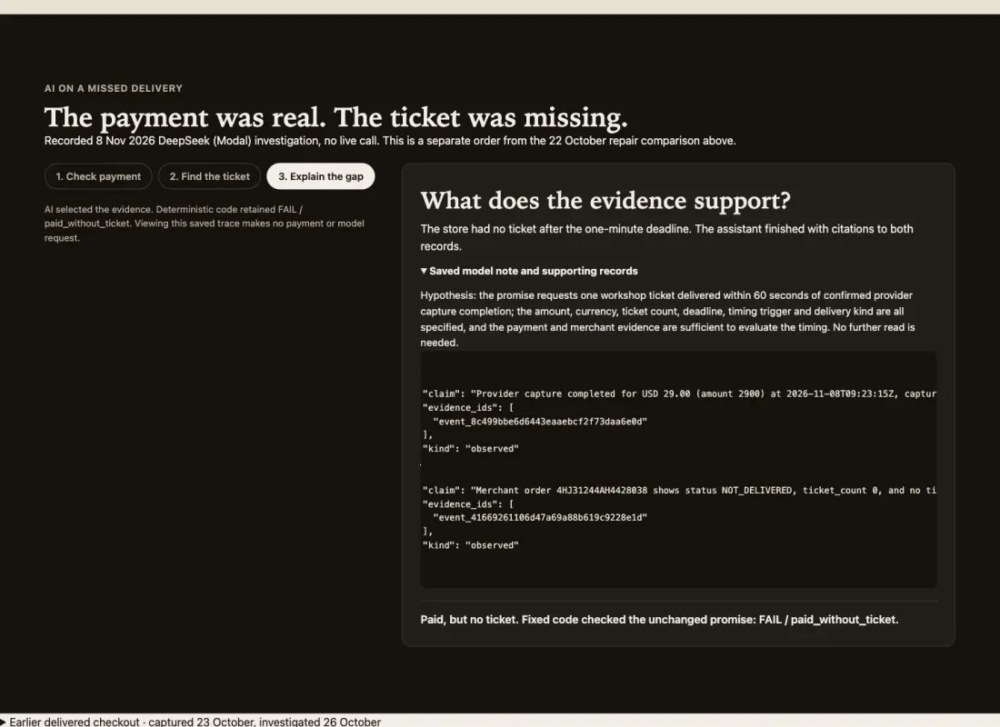
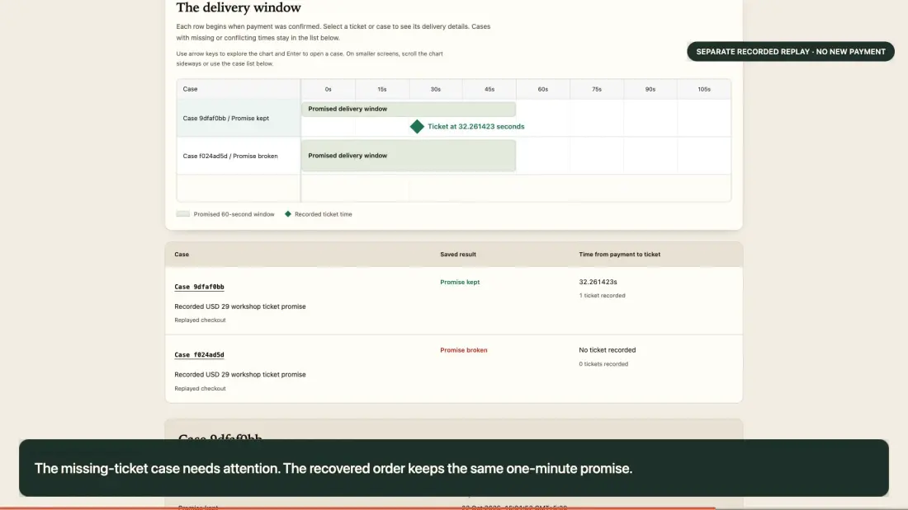

01 — The gap
The money arrived.
The ticket didn’t.
The store lost PayPal’s reply. The payment completed, but the customer was left without a ticket. CrashCart checks the payment and delivery separately.
Inspect the missing orderFrom payment to promise
Find the missing step between a PayPal payment and delivery.
Live Sandbox checkout when available · Open the saved example with no new calls.
A payment is only half the story
Your payment dashboard says complete. Your customer says nothing arrived. CrashCart brings both records into one investigation.
A successful payment never proves delivery.

Same saved payment. Repaired fulfilment rule.

01 — The gap
The store lost PayPal’s reply. The payment completed, but the customer was left without a ticket. CrashCart checks the payment and delivery separately.
Inspect the missing order02 — The investigation
The assistant chooses where to look: read PayPal, check the ticket store, then explain what the evidence supports. Fixed code decides whether the promise was kept.
The saved 8 November AI investigation is a separate case from the 22 October repair comparison.
Read the saved investigation03 — The repair
The healthy replay applies the repaired rule to the same saved input: issue a ticket after the payment read confirms capture. It delivers in 32.26 seconds without changing the customer’s one-minute promise.
Compare the repair04 — The delivery window
Bryntum Community Scheduler puts the ticket beside the promised delivery window. The actual view appears in the video; the investigation has its own simpler timeline. Explore the recorded delivery window.
See the scheduler in actionCreate, capture and independently check a Sandbox order. Know whether the payment completed before checking delivery.
The source of payment evidenceA bounded assistant chooses payment and ticket records to inspect. Its findings cite the evidence. Fixed rules decide the outcome.
AI proposes. Code decides.Compare ticket delivery with the promise made to the customer. See the actual timing view in the 2:45 product video.
Time makes the difference visibleStart with one missing order